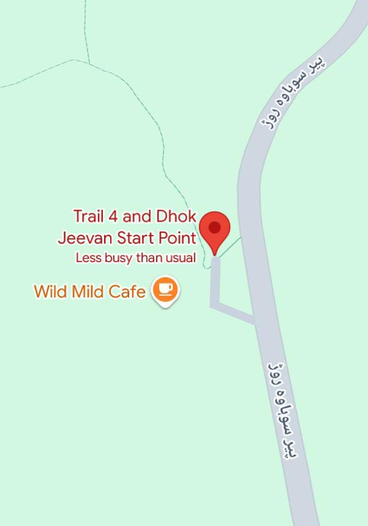
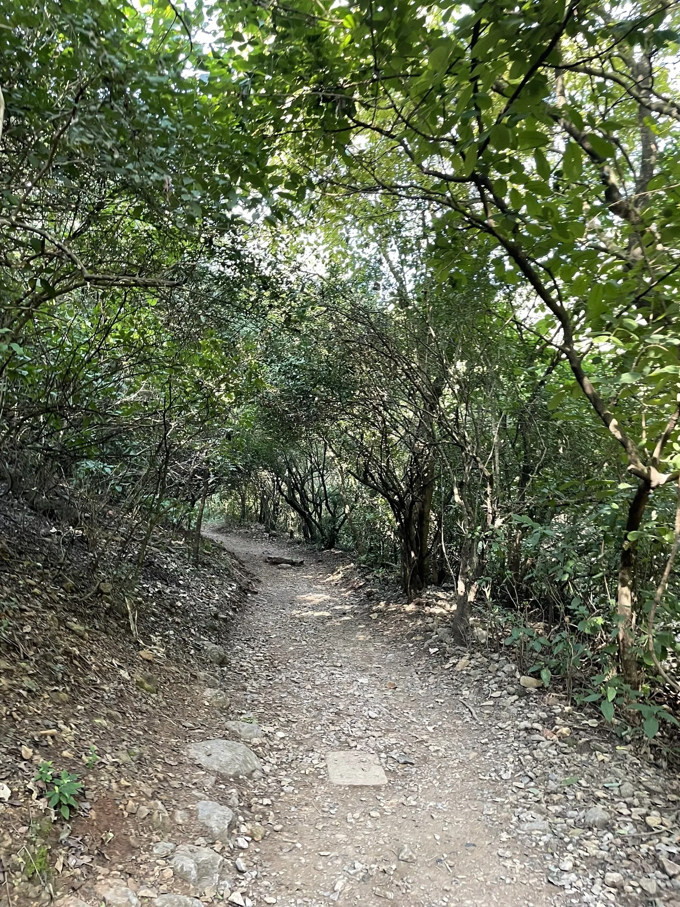
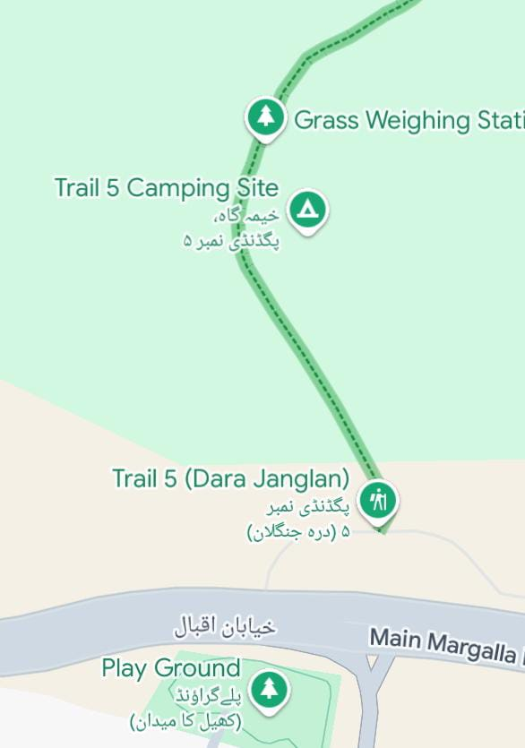
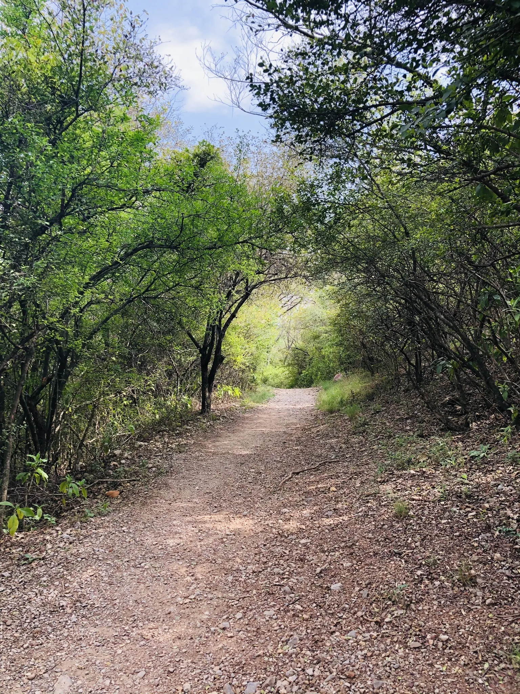
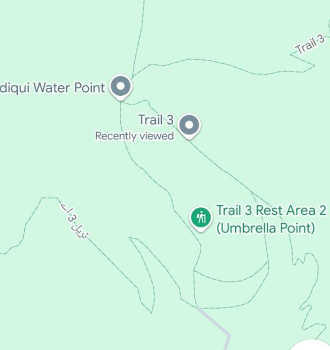
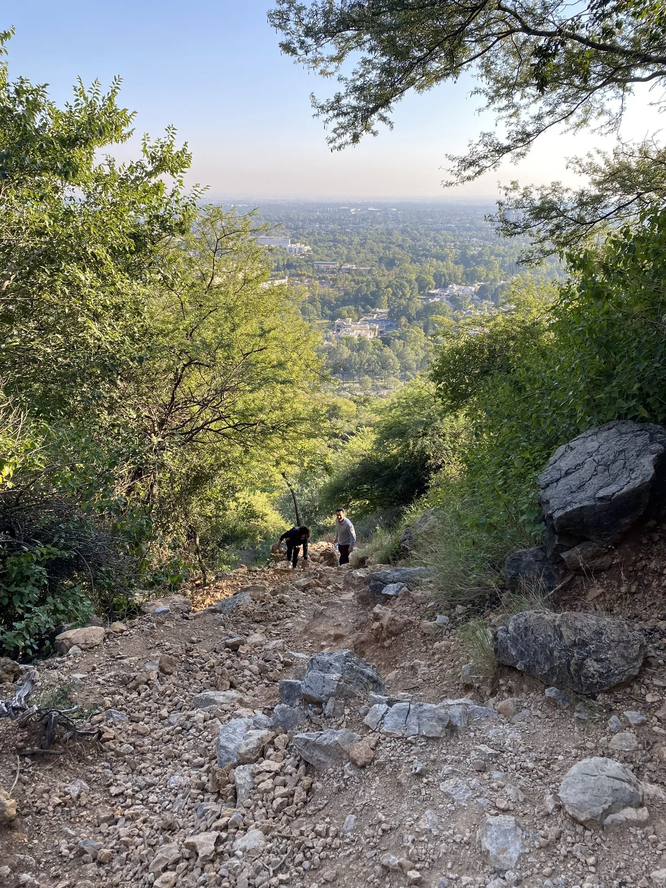
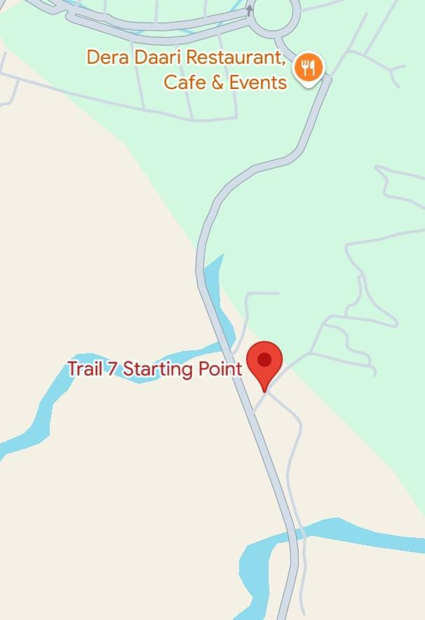
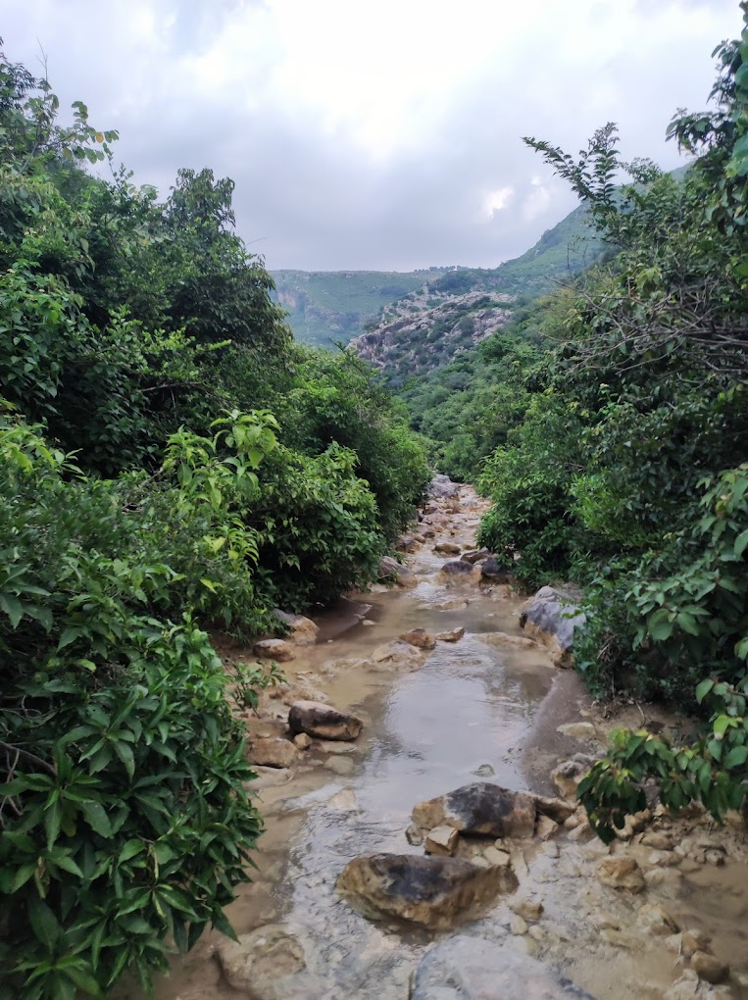
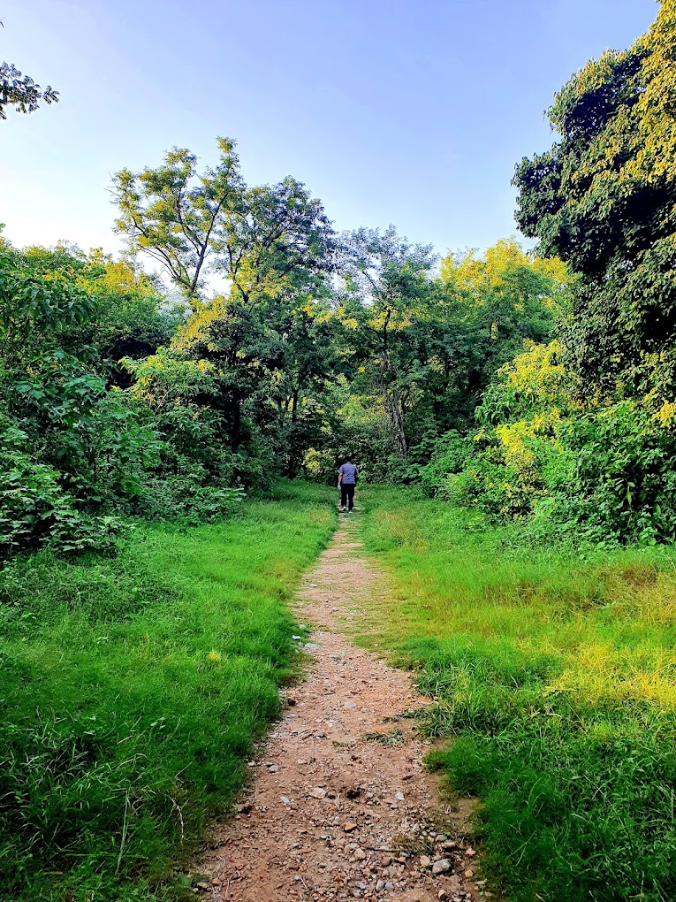

Fun trail with great views and elevation. You can take the regular trail or fire line path that cuts through the trail, but it’s really steep, rocky, harder, and faster, of course.
Be careful while coming down on this path, as it’s steep and has loose rocks.
The best part is that you can motivate and reward yourself with some great food at Monal when you reach the top!

T
R
A
I
L
4

Hamna Majeed
Hamza Ali
Hiking trail with views, a stream at the top as well, i will recommend taking water for drinking. Rocky so need good hiking shoes.

T
R
A
I
L
5

Muhammad Ammar
Trail 5: A Must-Visit Gem in Islamabad! Trail 5 in Islamabad is an absolute delight for nature enthusiasts and adventure seekers alike. This trail offers a perfect escape from the hustle and bustle of city life.
From the moment you step onto the trail, you're surrounded by lush greenery, chirping birds, and the soothing sound of rustling leaves. The hike itself is moderately challenging, making it ideal for both beginners and seasoned trekkers.
The well-maintained path ensures a safe journey, while the breathtaking views of Islamabad from the top make every step worth it. What sets Trail 5 apart is its serenity. Even on busy days, it retains a peaceful atmosphere that refreshes your mind and soul.
Difficulty: Moderate
Difficulty: Moderate
Ayan Ahmed
4.7 km hike when going to the top. First 1.8 Kms is easy. Next 2 Kms are constant climb and last few hundred meters are just flat. Took 1 hr 19 minutes to reach the top.
On the way back I took the other route which was 4 km in distance and took about 42 mins to reach back to the starting point.

T
R
I
A
L
3

Afnan Ali
Fun trail with great views and elevation. You can take the regular trail or fire line path that cuts through the trail, but it’s really steep, rocky, harder, and faster, of course.
Be careful while coming down on this path, as it’s steep and has loose rocks. The best part is that you can motivate and reward yourself with some great food at Monal when you reach the top!
Abdul Razzaq
Love this trail. Its very clean especially with the trash cans in place. I went all the way up to Monal and back. Trail is fairly well shaded for around 60% of the trail.

T
R
I
A
L
7

Arsalan Abbas
Excellent hike. We spent approximately 1h 45 min to the restaurant at Manal, last bit was alongside a road that wasn't too pedestrian friendly (15 min), but rest of the hike was greate.
For those who's done a bit of hiking before, this was not a very hard hike, a bit steep at times, but no climbing. Fantastic views of both the mountains and the city below. Advice to go late afternoons in the warm season.
Humayun
A good hike with some challenges. I will strongly recommend to hike it together with friends or with a professional travel guide together. Don't do it solo since it is quite steep and rocky and some parts actually are quite challenging.
I went there for just experiencing nature, not really a hiker. I was so lucky to have a local to serve as the guide and company. I still feel challenges and several times I stepped on the rolling stones and slid. Fortunately, I was not hurt.
I will also recommend to bring your walking poles if you have. Hike slowly and pay attend to the road situation.

T
R
I
A
L
2

Ali Ahmad
Very scenic trail with stream running along. Gradual incline so family with children would equally enjoy. Resting places on the way.
A fresh water spring after 3 kms. Enjoy berry trees in summer season. Bring your water bottles.
Haris Ali
this is a long trail would help for people who want to lose weight, not recommended for kids as they will get tired.
This trail is very rocky and dangerous too at one point I was about to fall. If you want to go there make sure your GPS works.